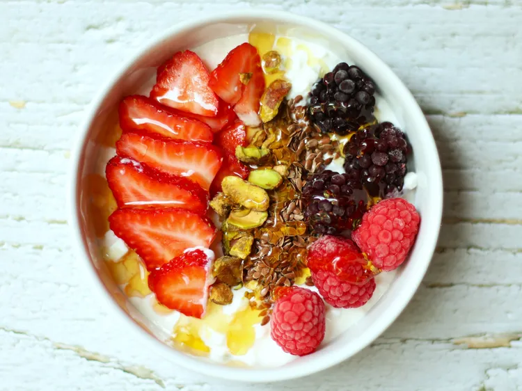

Home
Berry Cottage Cheese Breakfast Bowl

Description
This berry cottage cheese breakfast bowl is a simple, nourishing bowl that’s both
refreshing and filling. Berries, pistachios, and flaxseed top low-fat cottage cheese for a
nourishing, hearty breakfast that is also beautiful to look at.
Ingrediants
- 1/2 cup low-fat cottage cheese
- 2 large strawberries, sliced
- 3 raspberries
- 3 blackberries
- 1 tablespoon pistachios, roughly chopped
- 1 teaspoon flaxseed
- 1 tablespoon honey
Steps
- Place cottage cheese into a small bowl. Arrange strawberries, raspberries, blackberries, pistachios, and flaxseed side-by-side on top. Drizzle with honey.